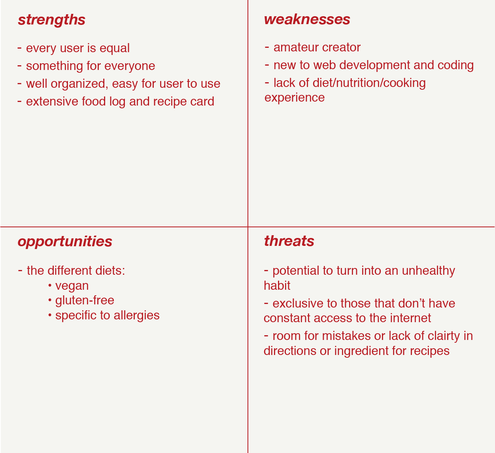

A SWOT analysis of a webpage that offers a platform for users to share their meals and recipes with others and a food log for users to keep track of what they eat day-to-day:
Looking at the strengths, this website would differ from other blogs or apps that offer recipe ideas in that this one allows everyone to have a voice and share their own ideas and recipes; others tend to have recipes suggested by one person, the creator. Also, because there would be such a range of different users sharing what they eat, there’s potential for everyone to find something they like. Both the templates food log and the recipe card will be well designed and organized, so that it is easy for the user to just fill out. The food log will be extensive compared to others out, where there is more to track than just meals, such as a water log, a section for users to note how they feel before and after they eat, etc.
The weaknesses all pertain to my lack in experience with both web development and food tracking. Because I am only a beginner in HTML, the actual execution of the website might not be perfect and it’ll be difficult to endure that everything functions well. As for lack of diet and cooking, it means that I do not fully understand what is needed to include aspects of such on a website for others to depend on; is what I include appropriate for the goals and purposes of the website?
The main opportunities presenting themselves regard different diets that people go by; they offer different sections to include in the website. Rather than just having one page where all of the recipes are shared, there can be a page that’s only for vegan food, or gluten-free food, or food that excludes common allergy ingredients, like nuts. This way users can find the kind of recipes they want faster.
One threat that is specific towards the food log is that there have been cases in which food tracking can turn into an unhealthy habit, depending on the user’s mental health, but I imagine if enough users turn it into one, not only does it completely go against the purpose of the website, but also created a bad rep. Other threats are not as serious, one includes the fact that not everyone has constant access to the internet, which means it isn’t available to everyone. This is a threat, because there are companies that offer a print version of a food journal, so people might gravitate towards that instead. Another threat is users can be unclear in their instructions or ingredients, making it difficult for others to successfully recreate their meals.
Overall the SWOT analysis allowed me to further develop my ideas for the website I want to create; one where people, all looking to eat healthier, get inspiration for meals, and improve their dietary habits, can go to one place to look for and share recipes for healthy meals and snacks, get inspiration from what others are eating, and privately log their meals of the day. I was able to think of more things to add to the site, as well as things I need to consider, such as designing a recipe template where there is as little room for mistakes as possible for the user to be unclear.